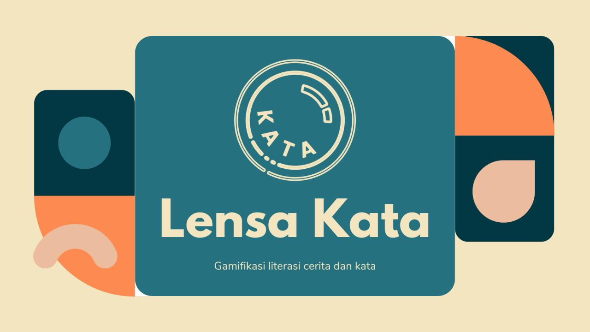
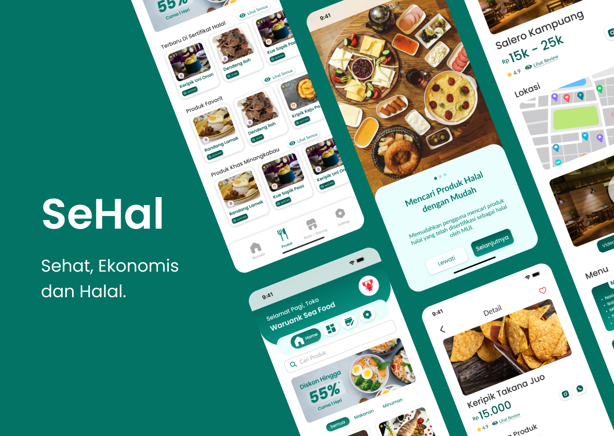

I am still learning.
Hello, I'm Azka.
Informatics Engineering fresh graduate with experience in UI/UX design and product development.
Projects

Lensa Kata
This project was created during the Independent Study period of MSIB-Educourse Batch 7. LensaKata is a gamification-based educational platform that focuses on children's literacy development, particularly on story comprehension, vocabulary enrichment, and creative writing. This platform is designed for elementary school children, utilizing keywords as the foundation for literacy practice.
Role
UX Researcher
UI Designer
Team Lead

JurKos
This project was developed during a UI/UX course. JurKos is a boarding house rental app designed to help users find options that match their budget and location while improving visual appeal. Research identified key needs: price transparency, easy navigation, and accurate information. Features include radius filters, amenity selection, price simulation, interactive maps, and real-time reviews.
Role
UI/UX Designer

SeHal
This app was redesigned during my internship at Ngampooz. SeHal is a platform that helps users find nearby halal food courts and restaurants. It also provides a POS system for restaurant owners to manage operations and apply for halal certification, including self-declare submissions.
Role
UI Designer